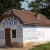

Nicolae Bădiţă a fost profesor de limba română într-un sat. Are 85 de ani şi e pensionar. Dar nu dintre aceia care se calcă în picioare pentru o porţie de sarmale electorale gratuite. Nu, olteanul Nicolae Bădiţă n-are vreme să se plângă de pensia mică şi să-i înjure pe guvernanţi. E ocupat să-i înveţe pe copii să joace şah. N-o să-l vedeţi niciodată pe şahistul campion Nicolae Bădiţă manifestându-se aşa. Nu, pentru că el n-are energie de cerşit, ci cunoştinţe de dăruit.
Timp de 26 de ani, octogenarul Bădiţă a organizat un festival de şah şi cultură într-un sat cu câteva sute de locuitori: Roşieni, din comuna Dobrun, judeţul Olt. Satul există pe hartă doar datorită acestei manifestări pentru care dascălul oltean se zbate an de an. Acum se ocupă de un proiect destinat copiilor slătineni, care au ocazia să se joace cu o tablă gigantică de şah, învăţând primele noţiuni. Iată ce face Nicolae Bădiţă într-o zi caniculară, în loc să participe la un miting USL la care să urle din toţi bojocii “jos beţivanu’ chior care mi-a tăiat pensia“:
Da, aţi auzit bine! Profesorul pensionar Nicolae Bădiţă vrea să-i înveţe pe cei mici şah în mod gratuit! Şi spune că el nu se plânge, pentru că are o datorie de împlinit. La “Casa Binelui” pe care a înfiinţat-o în satul Roşieni nu-i timp de revendicat pensii ori alocaţii. Pe zidurile dărăpănate ale unei cocioabe, fost chioşc CAP, bătrânul a scrijelit “toţi să muncim bine“. Din pensia lui, dascălul oferă premii copiilor care vor să înveţe, să creeze, să citească. Văzând în ce hal cum arată “Casa Binelui”, vă imaginaţi ce standard de viaţă are şahistul Bădiţă?
Şi totuşi el nu protestează, nu revendică, nu critică, nu înjură, nu se plânge, nu stă cu mâna întinsă, nu se simte “ciuruit”, nu face greva foamei, nu dă statul în judecată ca să-i mărească pensia. Oferă, în schimb, o fărâmă din experienţa lui de-o viaţă. Pe gratis.
Diferenţa dintre boşorogi şi seniori
De ce e Nicolae Bădiţă atât de singur printre pensionarii României? De ce sună povestea lui atât de neobişnuit? Şi mai ales, de ce trebuie să vedem zilnic la televizor astfel de boşorogi, în timp ce despre seniorul şahist nu vorbeşte mai nimeni? Binele ar avea mai multe case dacă i-am da o şansă, promovând acei oameni care dăruiesc, nu pe cei care cerşesc.


{kind=link}
{kind=link}
Satul rosieni este un loc de suflet al meu!am fost la 5 ediții pâna acum ale festivalului internațional de șah!regret că nu am fost la toate.anul acesta este a 28 ediție!ceea ce a făcut domnul profesor nicolae bădiță și care continuă să facă este ceva unicat.ceva între dorință și obligație.dânsul ar merita să fie președintele federației române de șah dacă ar conta valoarea când se fac alegeri la federație!sau ministrul învățământului!cine nu crede ceea ce spun n-are decât să vină la roșieni și să se convingă cum este organizat de către domnul bădiță festivalul de șah și ce frumos este satul roșieni!
Daca dumnezeu m ar intreba ce dorinta vreau sa mi indeplineasca i as spune sa dea timpul inapoi in anul 1975 cand am mers la scoala pe clasa intaia!m as inscrie la scoala generala din rosieni unde era director domnul profesor nicolae badita.m as fi realizat si din punct de vedere profesional si din punct de vedere sahistic!eu am avut parte de dascali ceea ce este opusul lui domnul badita,care au compromis meseria de dascal!sunt multe de scris!sunt multe de spus!daca as putea da timpul inapoi!
Există dascăli cu har, oameni remarcabili precum Nicolae Bădiţă sau Petre Suciu, despre care am scris aici.
Din păcate, strădania şi rezultatele lor sunt eclipsate de majoritatea abjectă: şpăgari, pomanagii, incoerenţi, ipocriţi, recrutaţi pe criterii politice şi nepotism, instabili psihic, slab pregătiţi. Iată doar un exemplu de astfel de cadre didactice.
@Andronache Sorin, mulţumim sincer pentru comentarii. Vă aşteptăm să ne mai povestiţi din experienţele dvs.
Va multumesc pentru,aprecieri si invitatia de a scrie in continuare!se admite cu diacritice sau nu?cine sunteti?numele acru este un pseudonim,nu?
E chiar recomandabil cu diacritice! De ce ACRU, am explicat aici.
În fine.tot nu știu cine este persoana,care este în spatele la acru.am înțeles să scriu cu diacritice.și că pot să scriu comentarii în continuare.am multe de scris!voi reveni!
În clasele 5-8 la școala generală din hațeg,l-am avut diriginte pe domnul dragomir mircea profesor de educație fizică și sport.a impus o metodă ticăloasă ca cei trei comandanți de grupă ai clasei să-i verifice pe colegii lor dacă și-au scris temele pe ziua în curs,și să-şi țină evidența într-un carnețel,și cei ce nu și-au scris să fie pârâți la începerea orei la profesor!o metodă ticălosă!
această entitate dragomir mircea este născut în 1947,a absolvit institutul de trei ani de sport din bacău,stagiul militar l-a efectuat la securitate,a devenit pe parcurs agent retribuit al securității,pâra la securitate și la partid!venea în stare de ebrietate la ore!odată m-a amenințat că o să mă bată de o să mă mutileze,și că eu să fac petiții apoi unde vreau!motivul că de ce am venit la școală fără număr.percepea cotizaţii la sport și fondul școlii fără o bază legală.aveam media 5 la sport deși participam la concursuri de șah.încuraja delațiunea!
după revoluție și-a găsit credința la greco-catolici.a ajuns și director la școală după revoluție.în timpul revoluției striga pe străzile orașului:”jos comunismul”!acum are probleme de sănătate.diabet,tensiune.l-am văzut pe stradă.arată ca o legumă.această canalie a jucat un rol nefast în cariera mea de elev!
În România contemporană, delaţiunea e valoare naţională! Nea Mircea Dragomir pare a fi avut traiectoria profesională a majorităţii românilor de succes. Turnător din vocaţie, disident de-o zi, apoi şef.
Pentru securist, şahul nu e sport. N-are minge, nu transpiri, nu alergi, nu te loveşti.
Cum l-aţi cunoscut pe profesorul Nicolae Bădiţă?
L-am cunoscut prima dată pe domnul profesor nicolae bădiță în 1991,la ediția din acel an a festivalului de la roșieni.de festival știam din anii trecuți din revista română de șah,dar am luat hotărârea,atunci,la bancă unde lucram atunci,mai aveam un prieten cu care jucam șah ocazional.îl chema mircea oros era contabil-șef la unitatea militară de la unirea cu gradul de căpitan.acesta mi-a spus că merge la roșieni și să vin și eu dacă vreau.urma să ne întâlnim în caracal.ne-am întâlnit ,el a venit cu cei doi copii ai săi și cu un militar în termen,de la el de la unitate.am mers la roșieni și aunci l-am cunoscut prima dată pe domnul profesor nicolae bădiță.
am hotărât să ne cazam la școala din roșieni.atunci au venit mulți șahiști din republica moldova.de atunci mi-a rămas în suflej satul roșieni.atunci l-am cunoscut pe dan bădiță băiatul domnului profesor nicolae bădiță.și pe fetele dânsului:luminița,lorelay andaluzia,izabela și doina.toate sunt frumoase și intelecuale!am multe de scris și de povestit.am putea și vorbi la telefon?să vă dau eu un număr de telefon sau îmi dați dumneavoastră?căpitanul oros a fost avansat maior și promovat la cmj deva,a trecut în rezervă locotenent-colonel,apoi a murit de o boală necruțătoare.aștept răspuns de la dumneavoastră!
Președintele comisiei județene de șah a județului hunedoara,este domnul Hotăran Corneliu,din anul în care fidel castro a luat puterea în cuba.rolul său de nulitate șahistă și de colaboraționism cu fosta securitate și cu organele de partid,a făcut ca această entitate să producă mari derapaje mișcării șahiste hunedorene!
când apare un talent în șah îl ia la clubul său.așa s-a întâmplat cu maestra internațională daria vișănescu,care a fost descoperită de antrenorul Gheorghe Scurhan,iar canalia de hotăran a luat-o la clubul său și se proclamă el antrenorul maestrei!sunt multe de spus despre acest personaj negativ,despre ce am avut de suferit în șah,din cauza lui!voi reveni cu altă ocazie!
În anul 1982 entitatea dragomir mircea ca să mă discretiteze în fața clasei a recurs la ceva ordinar.la ora de dirigenție,ne-a controlat la igienă.mie chipurile în păr mătreața pe care o aveam a considerat că sunt ouă de păduchi.mi-a spus că să mă spăl cu petrol,în cap.eu am fost și la asistenta școlii care s-a uitat în păr la mine și mi-a spus că este mătreață nu ouă de păduchi.acest păduche dragomir mircea în pauză a avut tupeul să spună că el a văzut ouă de păduchi.adică puteam să fi avut cu o zi înainte,iar a doua zi nu!nici asistenta nu i-am spus să vină în clasă să spună că am mătreață nu ouă de paduchi!
În 1982 am participat la primul concurs de șah,campionatul județețean de juniori.în hațeg nu exista asociație de șah.dacă nu eram legitimat nu puteam participa.aici a intervenit rolul nefast a lui hotăran,care mi-a spus să mă legitimez la voința deva unde el era președinte.mi-a mai spus că o să mi se deconteze orice sumă,cândtmerg la concursuri de șah că voința deva are bani nu glumă!voi mai reveni cu acest subiect!să revin la concursul de la călan.a fost arbitrat cu profesionalism de domnul adrian roman de la victoria călan.dânsul ne-a rezolvat cu cazarea la un cămin de nefamiliști în calan,a fost excelent.eu am luat locul 4,am primit și o diplomă de încurajare de la domnul adrian roman.mama mea l-a trimis cu mine la concurs ca să aibe chipurile grijă de mine pe ștefan cristian,fiind frați doar după mamă,era cu 5 ani mai mare decât mine.mi-a făcut viața un chin și un calvar,acolo.mă insulta,mă zorea să mut mai repede ca să termin partida mai repede.a avut un rol nefast pentru mine la acel concurs.voi mai reveni despre concursurile la care am participat!
În luna august a anului 1983 trebuia să particip la finala campionatului de juniori la șah care s-a ținut la neptun.nu am putut participa întrucât am fost tăiat de pe diagrama concursului de șah ce s-a ținut la călan,unde m-am clasat pe locul 4,întrucât nu mi s-a făcut legitimația la timp care să ateste că sunt legitimat la un club de șah.am ratat un concurs din cauza incompetenței domnului hotăran!
În anul 1984 s-au ținul la sala sporturilor din deva,campionatul județean de juniori.eram acum legitimat la as voința deva.organizator al concursului era domnul hotăran corneliu.nu a asigurat cazare și masă.mi-a spus să mă cazez la un hotel și să aduc chitanța că o să mi se deconteze.pentru masă nu aveam de unde să aduc bon!
în timpul concursului am jucat cu ghenghe eugen,care m-a păcălit ,chipurile el neștiind să umble cu ceasul de control,apăsând eu în locul său.hotăran ca organizator și albitru nu a zis nimica!am pierdut partida,dar în final am reușit să mă cazez pe locul 2! la as voința deva era casier un bețivan notoriu maier ioan.lui i-am dat chitanțele pentru decont,care nu mi-au mai fost decontate!trebuie să mai spun că la hotel a trebuit să fiu însoțit de mama mea,întrucât fiind minor nu m-ar fi cazat singur.
în acel an în septembrie s-a ținut finala la juniori la eforie nord.tot așa,de la as voința deva mi s-a spus să avansez eu banii de cazare și să aduc chitanța.la eforie nord,organizatorii,de acolo ne-au asigurat cazarea la vile.eu fiind cu mama mea,pe ea au spus că nu o pot caza,așa că am stat la o familie în gazdă.chitanță nu am avut de unde să iau,nici pentru cazare,nici pentru masă!am realizat 4 puncte din 9 posibile,alitru principal fiînd petre seimeanu.în ultima rundă am jucat cu cățoiu din călărași iar acesta a atins o piesă pe care nu a mai vrut să o mute,iar eu nu am reclamat la arbitru.puteam să-i o piesă și astfel câștigam partida.
În anul 1985 am participat la campionatul județean de juniori care s-a ținut la sala sporturilor din deva.am stat la un hotel în deva,pe banii mei,și masa tot pe banii mei și transportul hațeg-deva,dus întors tot pe banii mei.chitanțele predate la as voința deva nu mi-au fost decontate,de hotăran și maier.la concurs am luat locul 2.
Am mers la finala națională ce s-a desfășurat la băile herculane.eu am stat în cameră la hotelul diana,cu stronski iosif,de la as victoria călan,care s-a clasat pe locul întâi înaintea mea la concurs la deva,la categoria juniori până la 17 ani.în cealaltă cameră au stat popa sorin și ștefan ioan de la as voința deva,aceștia fiind la categoria juniori 17-20 ani.cazarea și masa mi-au fost plătite de asociaţie,cu cec virament.popa sorin având cecurile.ne-am întâlnit în gara simeria.datorită lor m-am urcat din mers în tren.aceștia mi-au făcut viața un calvar.colegul meu de cameră cu ceilalți doi ,mi-au furat bonurile de masă,mi-au stricat ceasul de control la șah,mi-au luat din bagaje conserva de carne,stronski mi-a cerut bani împrumut pe care nu mi i-a mai înapoiat,ștefan ma întrebat câți bani mi-am luat cu mine,era un du te vino în cameră.popa sorin m-a păcălit să plătesc eu taxa de închiriere a televizorului,care se afla la el în cameră.la acest concurs am acumulat 3 puncte din 9 posibile.
Salutare in deosebi participantilor la festivalul de sah 1991 august a fost SUPER LOCUL 5 LA sah si locul 2 la maratonul Prieteniei!!! cine are posibilitate sa ne mai organizam inca odata scrieti buraco
Comments on this entry are closed.